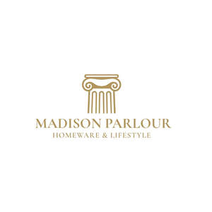

Trade Mark Journal No.2025/026 27 June 2025
UK00004204392 15 May 2025 (21,24,27,35)

- Class 21
- Ceramics for kitchen use; Coffee services of ceramic; Glass cleaning implements; Household utensils for cleaning, brushes and brush-making materials; Coffee services [tableware]; Glass scrapers for cleaning purposes; Glass dishes; Baking dishes made of glass; Glass tableware; Kitchen utensils of silicon; Mixing spoons [kitchen utensils]; Works of art of porcelain, ceramic, earthenware or glass; Kitchen utensils; Egg separators [kitchen utensils]; Porcelain articles for decorative purposes; Kitchen utensils, not of precious metal; Aluminium moulds [kitchen utensils]; Moulds [kitchen utensils]; Baking containers made of glass; Abrasive instruments for kitchen [cleaning] purposes; Molds [kitchen utensils]; Paper cooking pots; Coffee services in the nature of tableware; Glass pots; Glass mugs; Toilet and bathroom cleaning utensils ; Mugs made of ceramic materials; Wire baskets [cooking utensils]; Tortilla presses, non-electric [kitchen utensils]; Abrasive discs for kitchen [cleaning] purposes; Mats, not of paper or textile, for beer glasses; Cooking utensils; Presses (Garlic -) [kitchen utensils]; Garlic presses [kitchen utensils]; Tenderizers [kitchen utensils]; Baking utensils; Tea services [tableware]; Works of art of porcelain, ceramic, earthenware, terra-cotta or glass; Prize cups of porcelain, ceramic, earthenware, terra-cotta or glass; Tableware, cookware and containers; Coffee services of china; Baking dishes made of porcelain; Abrasive sponges for kitchen [cleaning] use; Drinking mugs made of porcelain; Ceramic tableware; Spatulas [kitchen utensils]; Cosmetic and toilet utensils; Coffee pots [non-electric]; Non-electric coffee pots; Kitchen containers; Cooking utensils, non-electric; Decorative boxes of glass; Glass bowls; Bowls (Glass -); Glass cups; Commemorative statuary cups of porcelain, ceramic, earthenware, terra-cotta or glass; Non-electric rice cooking pots; Statuettes of porcelain, ceramic, earthenware or glass; Trivets [table utensils]; Kitchen urns [not of precious metal]; Basting spoons [cooking utensils]; Baking dishes made of earthenware; Ceramic mugs; Statues of porcelain, ceramic, earthenware or glass; Statues of porcelain, earthenware, ceramic or glass; Coffee pots not of precious metal; Tea services in the nature of tableware; Household or kitchen utensils; Cooking utensils for barbecue use; Coffee pots; Brushes for cleaning babies' feeding bottles; Containers for household or kitchen use; Cooking pots, non-electric / Non-electric cooking pots; Statues, figurines, plaques and works of art, made of materials such as porcelain, terra-cotta or glass, included in the class; Busts of porcelain, ceramic, earthenware or glass; Cookware and tableware, except forks, knives and spoons; Glass vases; Glass flasks [containers]; Defrosting trays for kitchen use; Decorative porcelain ware; Food preserving jars of glass; Glass containers; Non electric coffee pots not of precious metal; Plastic plates [dishes]; Industrial packaging containers of glass; Butter-dish covers; Cheese-dish covers; Floor cloths; Sauceboats; Feather-dusters; Jardinieres of glass; Brushes for parquet floors; Jardinieres of porcelain.
- Class 24
- Towels [textile] for kitchen use; Glass cloths [towels]; Kitchen towels [textile]; Kitchen towels of textile; Textile covers for duvets; Bed linen and blankets; Silk bed blankets; Covers for pillows; Bed covers; Fabric bed valances; Bed blankets made of cotton; Bed linen; Linen for the bed; Linen (Bed -); Covers for duvets; Bed blankets; Blankets (Bed -); Infants' bed linen; Valanced bed covers; Bed clothes and blankets; Canopies (bed linen); Bed covers of paper; Bed linen of paper; Textile goods for making headshawls and yashmaghs; Covers for eiderdown and duvets; Cot bumpers [bed linen]; Pillow covers; Duvet covers; Moquettes [curtains]; Crib bumpers [bed linen]; Quilted blankets [bedding]; Covers for mattresses; Bed linen and table linen; Glass-cloth [towels]; Bed coverings; Mattress covers; Sofa blankets; Bed linen made of non-woven textile material; Bed valances; Valanced bed sheets; Textile piece goods for making bedding covers; Sofa covers; Moquettes [fabric]; Bed warmer covers; Curtains and lace curtains of textiles or plastic; Covers for cushions; Cushions (Covers for -); Table covers of non-woven textile fabrics; Fabrics for use in covering armchairs; Bed clothes; Bed quilts; Cotton blankets; Ticks (mattress and pillow coverings); Shower curtains of textile or plastic; Covers of textile for toilet seats; Bed blankets made of man-made fibres; Curtains of textiles or plastic; Textile covers [loose] for furniture; Fitted toilet covers [fabric]; Fitted toilet seat covers of textile; Silk blankets; Comforters [covers]; Toilet seat covers of textile; Covers of textile for water closets; Canopies [covers for beds]; Fire-retardant textile shower curtains; Bedroom textile fabrics; Bed skirts; Fitted bed sheets; Textile goods for use as bedding; Bedsheets of leather; Hand-towels made of textile fabrics; Curtains of textile or plastic; Textile fabrics for use in the manufacture of beds; Protective loose covers for mattresses and furniture; Valances for beds; Curtains of textile; Bed sheets of paper; Bed sheets of plastic [not being incontinence sheets]; Bed sheets of plastic, not being incontinence sheets; Textile piece goods for making cushion covers; Comforters for beds; Quilt bedding mats; Silk fabrics for furniture; Woven fabrics for cushions; Table linen of textile; Woollen blankets; Covers for toilet lids of fabric; Unfitted fabric furniture covers; Covered rubber yarn fabrics [for textile use]; Comforters (bedding); Loose covers made of textile materials for furniture; Towels of textile; Towels [textile]; Towels [of textile]; Textile napkins [table linen]; Contoured mattress covers; Bed pads; Linen lining fabric for shoes; Cotton cloths; Linen [fabric]; Fitted toilet lid covers [made of fabric or fabric substitutes]; Coverings of textile and of plastic for furniture (not fitted); Eiderdown covers; Curtains of textile material; Pillowcovers; Travellers' rugs.
- Class 27
- Moquettes [carpets]; Chair mats [under-chair floor protector]; Linoleum tiles [floor coverings]; Rugs (Floor -); Vinyl floor coverings for existing floors; Carpet tiles for covering floors; Linoleum for covering existing floors; Floor tiles made of carpet; Linoleum for use on floors; Vinyl floor coverings; Paper floor mats; Linoleum; Linoleum tiles; Floor mats; Floor coverings [for existing floors]; Textile floor mats for use in the home; Floor mats of cork; Floor mats of rubber; Puzzle mats [floor coverings]; Tiles made of linoleum for fixing to existing floors; Straw mats [mushiro]; Mushiro straw mats; Floor coverings; Coverings (Floor -); Floors coverings of rubber; Tiles made of linoleum; Floor tiles made of cork; Carpet tiles; Tiles (Carpet -); Carpet tile backing; Bathroom tiles [carpet]; Anti-slip material for use under floor coverings; Showermats; Floor coverings [mats] being sheet materials for use in sporting activities.
- Class 35
- Retail services in relation to cups and drinking glasses; Retail services in relation to bedding for animals; Wholesale services in relation to floor coverings; Online retail store services in relation to clothing; Online retail store services relating to clothing; Online retail services for downloadable virtual clothing; Online retail services relating to handbags; Online retail services relating to clothing; Online retail services relating to jewelry; Online retail services in relation to downloadable virtual clothing; Online retail services in relation to downloadable virtual handbags; Online retail services relating to toys; Online retail services in relation to downloadable virtual footwear; Online retail services relating to cosmetics; Online retail services in relation to downloadable virtual headwear; Online retail services for downloadable digital music; Online retail services relating to luggage; Online retail store services relating to cosmetic and beauty products; Retail services connected with the sale of furniture; Retail services in relation to downloadable virtual handbags; Retail services in relation to downloadable virtual clothing; Retail services in relation to downloadable virtual footwear; Advertising the goods and services of online vendors via a searchable online guide; Online retail services in relation to downloadable virtual works of art; Retail services in relation to jewellery; Retail services in relation to fashion accessories; Mail order retail services for clothing; Retail store services in the field of clothing; Shop retail services connected with carpets; Mail order retail services for clothing accessories; Retail services in relation to downloadable virtual headwear; Retail services relating to furniture; Retail services in relation to furniture; Mail order retail services for cosmetics; Retail services in relation to clothing; Mail order retail services connected with clothing accessories; Retail services connected with stationery; Retail services in relation to downloadable electronic publications; Providing online marketplaces for sellers of goods and or services; Retail services in relation to smartphones; Retail services relating to jewelry; Retail services in relation to gardening products; Retail services relating to clothing; Retail services in relation to horticulture products; Retail services in relation to clothing accessories; Retail services relating to sporting goods; Retail services in relation to cookware; Online retail services for downloadable ring tones; Retail services in relation to games; Retail services in relation to furnishings; Retail of third-party pre-paid cards for the purchase of entertainment services; Retail services in relation to toys; Retail services in relation to footwear; Retail services in relation to tableware; Retail services connected with the sale of clothing and clothing accessories; Retail services relating to home textiles; Retail services in relation to pet products; Retail services in relation to bicycle accessories; Business management of wholesale and retail outlets; Retail services relating to horticultural products; Retail services in relation to car accessories; Providing a searchable online advertising guide featuring the goods and services of online vendors; Retail services in relation to fabrics; Online retail services for downloadable and pre-recorded music and movies; Retail services in relation to saddlery; Retail services in relation to stationery supplies; Retail of third-party pre-paid cards for the purchase of telecommunication services; Retail services in relation to domestic electronic equipment; Retail services in relation to bags; Retail services in relation to yarns; Retail services in relation to downloadable virtual works of art; Retail services relating to automobile accessories; Providing a searchable online advertising guide featuring the goods and services of other on-line vendors on the internet; Online advertising services; Provision of an online marketplace for buyers and sellers of goods and services; Retail services in relation to pushchairs; Retail services in relation to mobile phones; Retail services in relation to wearable computers; Retail services in relation to educational supplies; Retail services in relation to art materials; Retail services in relation to toiletries; Retail services in relation to cutlery; Retail services in relation to smartwatches; Retail services in relation to sewing articles; Retail services in relation to fuels; Retail services in relation to bicycles; Retail services in relation to safes; Retail services connected with the sale of subscription boxes containing cosmetics; Retail services relating to furs; Retail services in relation to kitchen appliances; Retail service connected with the sale of power tools via a distributorship; Retail services in relation to horticulture equipment; Retail services in relation to hair products; Retail services relating to flowers; Provision of an on-line marketplace for buyers and sellers of goods and services; Online business networking services; Retail services in relation to sporting articles; Retail services relating to batteries; Retail services in relation to lighting; Retail services in relation to downloadable music files; Retail services in relation to gardening articles.
Madison E-commerce Ltd